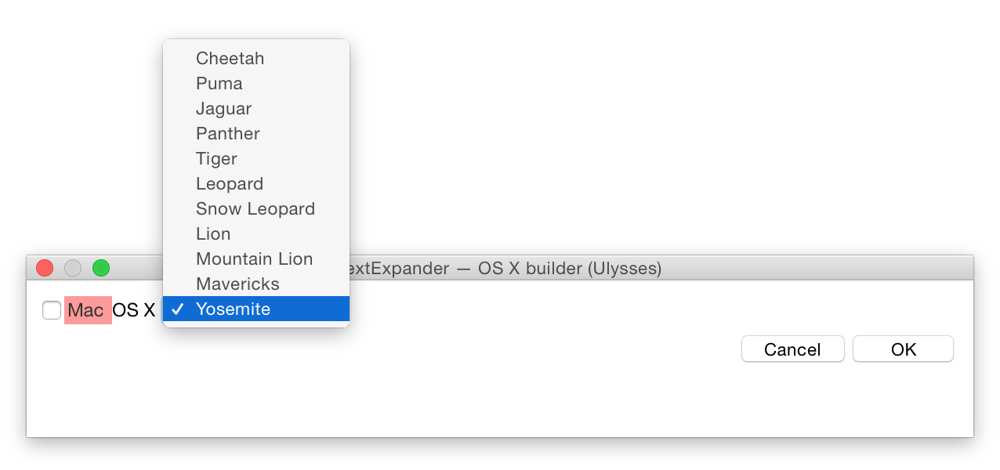
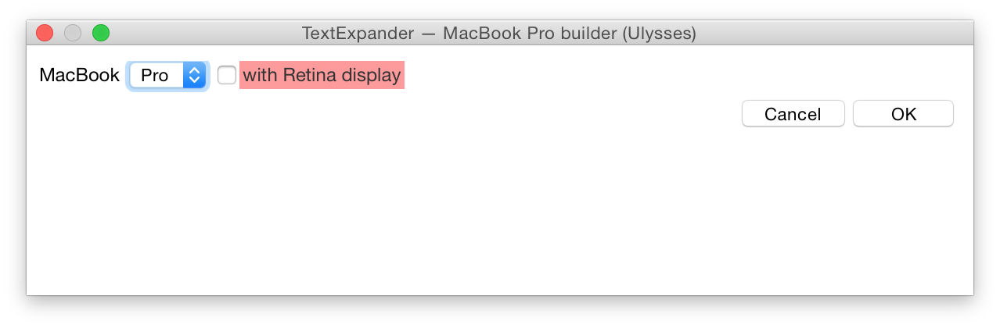

Easily enter or correct the spelling of Apple products
View the Project on GitHub jordanmerrick/apple-te-snippet-collection
A collection of snippets for TextExpander to autocorrect commonly misspelt or incorrect use of letter case in Apple product names.
By Jordan Merrick.
These snippets automatically fix the letter case for most Apple products, wherever possible. For example, if you type any variant of iPhone 5s, such as iphone 5, iPhone 5S or Iphone 5s, TextExpander will correct it Apple’s preferred styling.
Snippets are available for the following product lines:
There are some snippets for the following products that you can use to specify exact models:
These snippets include the different letter case options, as well as names if required.


Apple Products.textexpander file to install. A new group named Apple Products will now appear in TextExpander. I’ve made this collection of snippets available on GitHub for anyone to contribute to, so if you have any additions or modifications you’d like to make, and are proficient with Git, fork the repo and submit a pull request.
If you’re not familiar with how Git works, you can make suggestions or report a problem by creating an issue on GitHub.